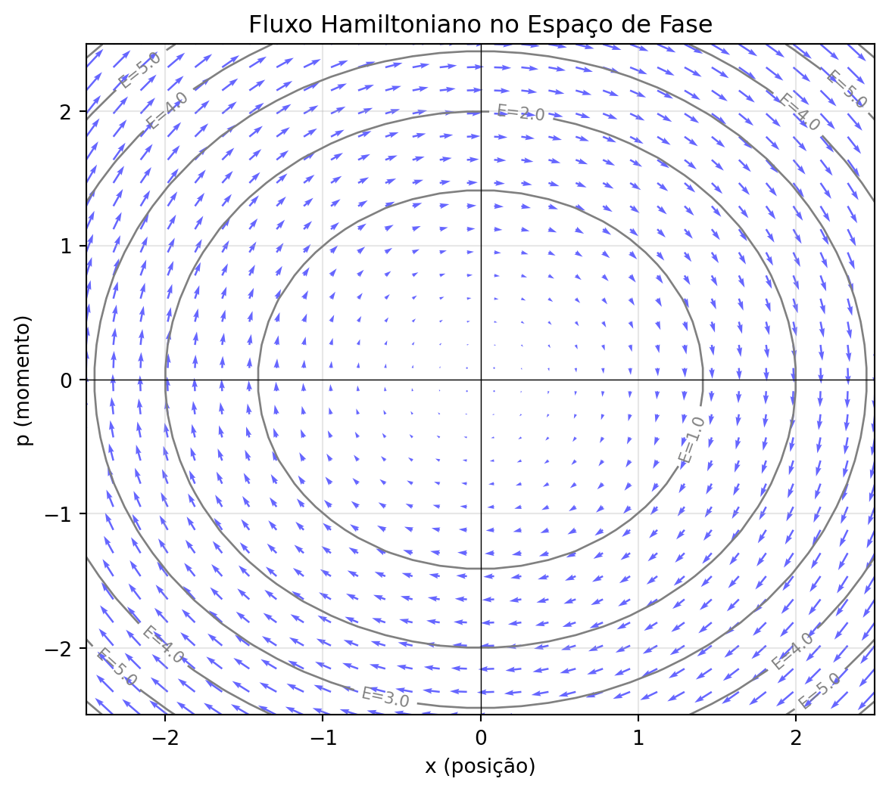
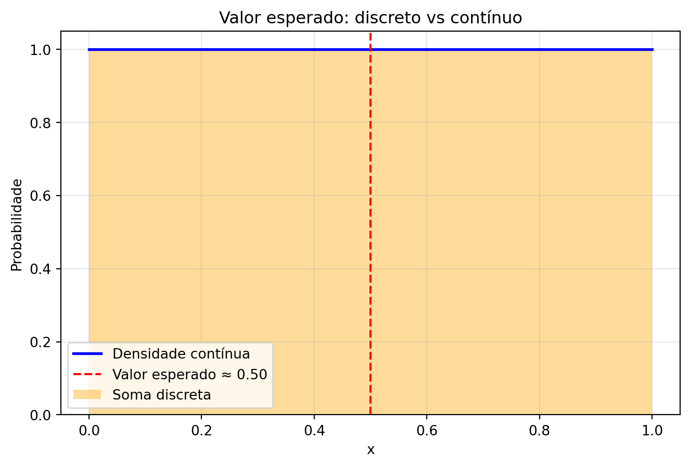
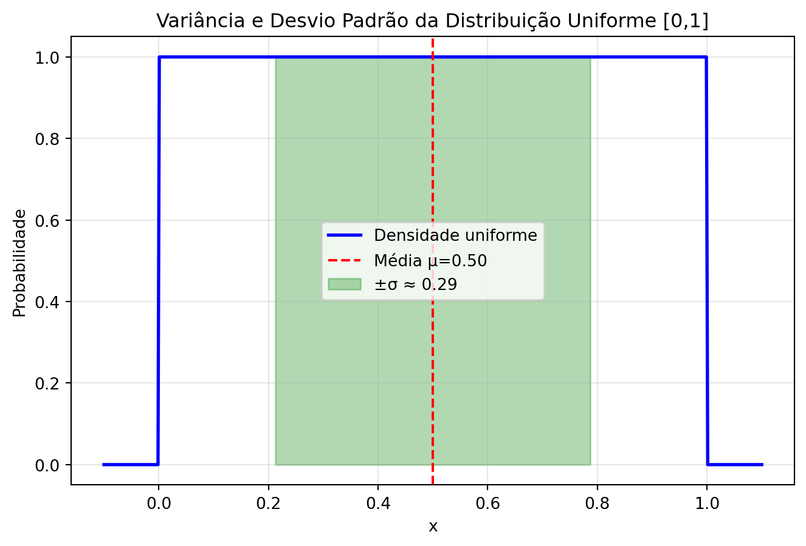
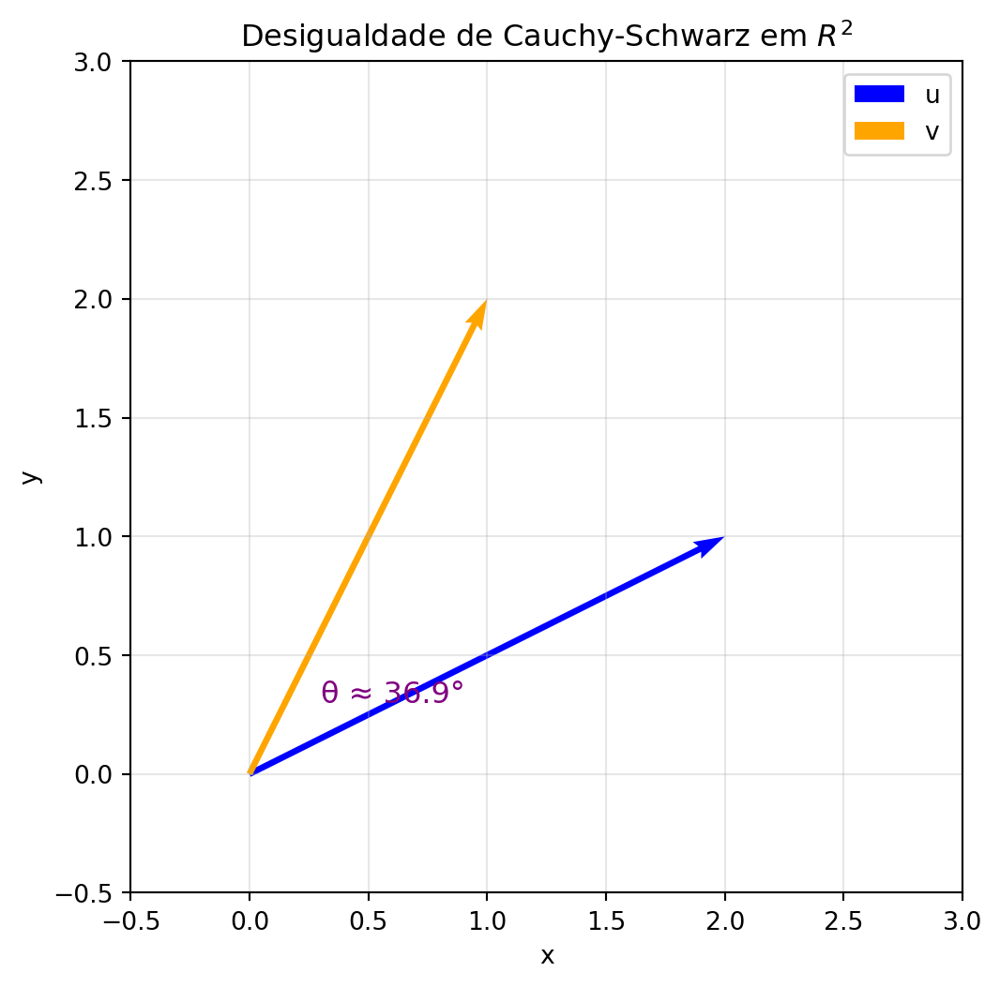
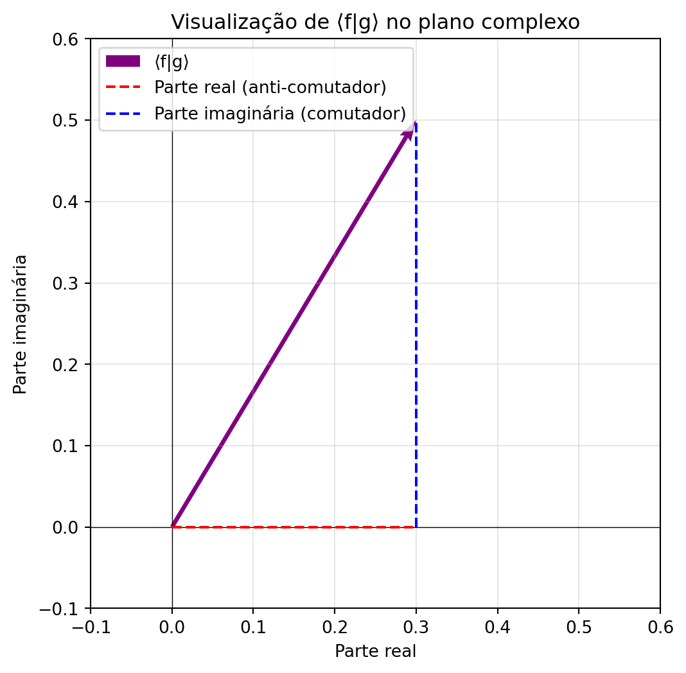

A mecânica clássica descreve o movimento de uma partícula pela segunda lei de Newton: \[
m \ddot{x}(t) = F(x,t),
\] onde \(\ddot{x} = \dd^2x/\dd t^2\) é a aceleração, \(m\) a massa, e \(F\) a força resultante.
Definimos o momento linear como \[
p(t) \equiv m \dot{x}(t).
\] Derivando em relação ao tempo: \[
\dot{p}(t) = m \ddot{x}(t) = F(x,t).
\] Portanto, \(m\ddot{x}=F\) é equivalente a \(\dot{p}=F\).
Sistema de primeira ordem
Podemos reescrever a equação de segunda ordem em \(x\) como um sistema de primeira ordem para as variáveis \(x(t)\) e \(p(t)\): \[
\dot{x}(t) = \frac{p(t)}{m}, \qquad \dot{p}(t) = F(x,t).
\]
Expansão temporal para \(\delta t\)
Para um pequeno intervalo \(\delta t\), expandindo por Taylor de primeira ordem: \[
x(t+\delta t) \approx x(t) + \frac{p(t)}{m} , \delta t,
\]\[
p(t+\delta t) \approx p(t) + F(x,t),\delta t.
\]
Força conservativa e potencial
Se a força for conservativa, existe uma função potencial \(V(x)\) tal que \[
F(x) = -\frac{\dd V}{\dd x}.
\]
Formulação Hamiltoniana
Definimos o Hamiltoniano \[
H(x,p) = \frac{p^2}{2m} + V(x).
\] As equações de movimento são obtidas pelas derivadas parciais: \[
\dot{x} = \frac{\partial H}{\partial p} = \frac{p}{m}, \qquad
\dot{p} = -\frac{\partial H}{\partial x} = -\frac{\dd V}{\dd x}.
\] Note que \(\tfrac{p^2}{2m}\) depende apenas de \(p\), e \(V(x)\) depende apenas de \(x\), o que simplifica os cálculos.
Estrutura matricial
Podemos condensar o sistema na forma matricial: \[
\frac{\dd}{\dd t} \begin{pmatrix} x \\ p \end{pmatrix} =
\begin{pmatrix} 0 & 1 \\ -1 & 0 \end{pmatrix}
\begin{pmatrix} \frac{\partial H}{\partial x} \\ \frac{\partial H}{\partial p} \end{pmatrix}.
\] A matriz \[
J = \begin{pmatrix} 0 & 1 \\ -1 & 0 \end{pmatrix}
\] é chamada de matriz simplética e codifica a estrutura da mecânica Hamiltoniana.
Exemplo: Oscilador harmônico
Para \(V(x) = \tfrac{1}{2}kx^2\), temos: \[
H(x,p) = \frac{p^2}{2m} + \frac{1}{2}kx^2,
\]\[
\dot{x} = \frac{p}{m}, \qquad \dot{p} = -kx.
\] Combinando: \(m\ddot{x} = -kx\), que é a equação do oscilador harmônico.
Figure 1: Evolução de uma trajetória no espaço de fases \((x,p)\) para o oscilador harmônico.
Exercícios
Mostre que a segunda lei de Newton \(m \ddot{x} = F(x,t)\) é equivalente à equação \(\dot{p} = F(x,t)\) usando a definição de momento linear \(p = m \dot{x}\).
Reescreva a equação \(m \ddot{x} = F(x,t)\) como um sistema de primeira ordem em termos de \(x(t)\) e \(p(t)\) e explique por que isso pode ser útil para métodos numéricos.
Considere um pequeno intervalo de tempo \(\delta t\). Derive a expansão de Taylor de primeira ordem para \(x(t+\delta t)\) e \(p(t+\delta t)\) a partir das equações de primeira ordem.
Uma força é dita conservativa se existe um potencial \(V(x)\) tal que \(F(x) = -\dd V/\dd x\). Dê dois exemplos de forças conservativas e dois exemplos de forças não conservativas.
Verifique que para o Hamiltoniano \(H(x,p) = \frac{p^2}{2m} + V(x)\), as equações de Hamilton \[
\dot{x} = \frac{\partial H}{\partial p}, \qquad \dot{p} = -\frac{\partial H}{\partial x}
\] são equivalentes às equações clássicas de movimento.
Explique qualitativamente como a forma elíptica da trajetória no espaço de fases do oscilador harmônico reflete a conservação de energia.
Álgebra e Produto Vetorial
Em duas dimensões, a matriz \[
J = \begin{pmatrix} 0 & 1 \\ -1 & 0 \end{pmatrix}
\] aparece naturalmente na formulação Hamiltoniana. Ela atua como uma rotação de \(90^\circ\), e pode ser usada para construir um produto bilinear que captura a noção de área orientada: \[
\vec{v}_1^T J \vec{v}_2.
\]
De forma explícita, se \(\vec{v}_1 = \begin{pmatrix}x_1 \\ p_1\end{pmatrix}\) e \(\vec{v}_2 = \begin{pmatrix}x_2 \\ p_2\end{pmatrix}\), então \[
\vec{v}_1^T J \vec{v}_2 = x_1 p_2 - p_1 x_2.
\] Note que, ao escrever a equação acima, estamos tratando \((x,p)\) como coordenadas de um plano e interpretando esse determinante como uma área orientada. Essa interpretação, porém, exige certo cuidado: \(x\) e \(p\) não têm as mesmas unidades físicas nem o mesmo significado geométrico. O espaço de fase não é um espaço euclidiano comum, mas sim um espaço com estrutura própria, onde a matriz \(J\) define uma forma bilinear antissimétrica (a chamada forma simplética). Assim, falar em “área” aqui é uma analogia geométrica útil para construir intuição, mas ela só se torna rigorosa quando entendemos que o espaço \((x,p)\) é dotado dessa estrutura simplética, que substitui o produto interno usual.
Esse determinante mede a área orientada do paralelogramo formado pelos dois vetores:
Se o valor é zero, os vetores são linearmente dependentes, pois não formam área.
Se é positivo ou negativo, ele indica tanto o tamanho da área quanto a orientação relativa entre \(\vec{v}_1\) e \(\vec{v}_2\).
Assim, \(J\) fornece um critério geométrico para independência linear e orientação no espaço de fase. Essa construção é análoga ao produto vetorial em três dimensões, que também mede áreas e orientações.
Conexão com os Parênteses de Poisson
A mesma estrutura aparece nas equações da mecânica Hamiltoniana. Dadas duas funções \(f(x,p)\) e \(g(x,p)\) no espaço de fase, seus parênteses de Poisson são definidos por
Ou seja, a mesma operação \(\vec{v}_1^T J \vec{v}_2\) que mede área entre vetores também mede a “independência” entre funções no espaço de fase. Essa estrutura é o coração da mecânica Hamiltoniana, e mais adiante veremos como ela se conecta às relações de comutação na mecânica quântica.
Figure 2: Área orientada gerada por dois vetores no plano de fase. O sinal de v1^T J v2 indica a orientação.
Exercícios
Verifique que, para \(\vec{v}_1 = \begin{pmatrix}x_1 \\ p_1\end{pmatrix}\) e \(\vec{v}_2 = \begin{pmatrix}x_2 \\ p_2\end{pmatrix}\), o produto \(\vec{v}_1^T J \vec{v}_2\) é antissimétrico, ou seja, \(\vec{v}_1^T J \vec{v}_2 = - \vec{v}_2^T J \vec{v}_1\).
Mostre que \(\vec{v}_1^T J \vec{v}_2 = 0\) se e somente se os vetores \(\vec{v}_1\) e \(\vec{v}_2\) forem linearmente dependentes.
Para os vetores \(\vec{v}_1 = \begin{pmatrix}1\\0\end{pmatrix}\) e \(\vec{v}_2 = \begin{pmatrix}0\\1\end{pmatrix}\), calcule \(\vec{v}_1^T J \vec{v}_2\) e interprete o resultado geometricamente.
Considere as funções \(f(x,p) = x^2 p\) e \(g(x,p) = x p^2\). Calcule os parênteses de Poisson \({f,g}\) explicitamente.
Demonstre que os parênteses de Poisson satisfazem a antissimetria: \({f,g} = -{g,f}\).
Explique como a interpretação de “área orientada” do determinante \(\vec{v}_1^T J \vec{v}_2\) se relaciona com a independência de funções no espaço de fase.
Parênteses de Poisson e Mecânica Hamiltoniana
A evolução temporal de uma função \(f(x,p)\) que depende de posição e momento é obtida pela regra da cadeia: \[
\frac{\dd}{\dd t} f(x(t),p(t)) = \frac{\partial f}{\partial x}\dot{x} + \frac{\partial f}{\partial p}\dot{p}.
\] Essas funções são chamadas de observáveis físicos. Ou seja, definimos como observável qualquer quantidade que pode ser medida a partir do estado do sistema.
Substituindo as equações de Hamilton, essa expressão pode ser reescrita em termos do parêntese de Poisson: \[
\frac{\dd}{\dd t} f = \{f,H\}, \quad \text{com} \quad
\{f,H\} = \frac{\partial f}{\partial x}\frac{\partial H}{\partial p} - \frac{\partial f}{\partial p}\frac{\partial H}{\partial x}.
\]
O papel gerador dos parênteses de Poisson
O parêntese de Poisson não é apenas uma notação conveniente: ele descreve como um observável gera transformações em outro.
O Hamiltoniano \(H\) gera a evolução temporal: \[
\frac{\dd}{\dd t} = \{\cdot, H\}.
\]
O momento \(p\) gera translações em \(x\): \[
\{x,p\} = 1 \quad \Rightarrow \quad \delta x = \epsilon \{x,p\} = \epsilon.
\]
A posição \(x\) gera translações em \(p\): \[
\{p,x\} = -1 \quad \Rightarrow \quad \delta p = \epsilon \{p,x\} = -\epsilon.
\]
Assim, podemos pensar nos observáveis como “geradores de transformações” uns sobre os outros. Essa é uma das ideias centrais da mecânica Hamiltoniana e antecipa a estrutura da mecânica quântica, onde os observáveis passam a gerar transformações via comutadores.
Conservação da energia
Quando o Hamiltoniano não depende explicitamente do tempo, ele mesmo é um integral de movimento. Isso fica claro porque \[
\frac{\dd H}{\dd t} = \{H,H\} = 0.
\] Portanto, a energia é sempre conservada. Lembrando que isso é verdade pois consideramos \(H\) como uma função de \(x\) e \(p\) e não de \(t\).
Estrutura algébrica
Os parênteses de Poisson satisfazem ainda a identidade de Jacobi, que garante a consistência da álgebra: \[
\{ \{A,B\},C \} + \{ \{C,A\},B \} + \{ \{B,C\},A \} = 0.
\] onde \(A\), \(B\) e \(C\) são funções de \(x\) e \(p\). Essa propriedade assegura que os observáveis formam uma estrutura matemática bem definida (uma álgebra de Lie), algo que será fundamental ao fazer a transição para a mecânica quântica.
Campo de Hamilton
A ideia central da mecânica Hamiltoniana consiste em estudar o fluxo no espaço de fase gerado pela evolução temporal do Hamiltoniano. A figura abaixo ilustra o fluxo gerado pelo Hamiltoniano do oscilador harmônico. Os vetores indicam a direção da evolução temporal: \[
\vec{V} = J \pmatrix{\frac{\partial H}{\partial x} \\ \frac{\partial H}{\partial p}}
\]
Code
import numpy as npimport matplotlib.pyplot as plt# Parâmetrosm, k =1.0, 1.0x = np.linspace(-2.5, 2.5, 30)p = np.linspace(-2.5, 2.5, 30)X, P = np.meshgrid(x, p)# Equações de Hamiltondxdt = P / mdpdt =-k * X# Energia (curvas de nível)H = P**2/ (2* m) +0.5* k * X**2plt.figure(figsize=(7, 6))# Curvas de nível de energiacontours = plt.contour(X, P, H, levels=6, colors="gray", linewidths=1)plt.clabel(contours, inline=True, fontsize=8, fmt="E=%.1f")# Campo vetorial (fluxo de Hamilton)plt.quiver(X, P, dxdt, dpdt, color="blue", alpha=0.6)plt.xlabel("x (posição)")plt.ylabel("p (momento)")plt.title("Fluxo Hamiltoniano no Espaço de Fase")plt.grid(alpha=0.3)plt.axhline(0, color="black", linewidth=0.5)plt.axvline(0, color="black", linewidth=0.5)plt.show()

Figure 3: Fluxo no espaço de fase gerado pelo Hamiltoniano do oscilador harmônico. As curvas representam níveis de energia constante e os vetores indicam a direção da evolução temporal.
Note que as curvas de nível de energia, como mostrado na Figure 3, sinalizam os níveis de energia, enquanto o campo vetorial ilustra o fluxo no espaço de fase. As curvas de nível coincidem com as trajetórias clássicas. Essa visualização reforça a interpretação de que o Hamiltoniano atua como gerador de transformações temporais: ao calcular \(\dot{f} = {f,H}\), vemos que o parêntese de Poisson com \(H\) fornece a regra de evolução de qualquer observável no tempo.
Exercícios
Mostre que a regra da cadeia aplicada a uma função \(f(x(t),p(t))\) leva a \(\dot{f} = \{f,H\}\) usando as equações de Hamilton.
Verifique explicitamente que \(\{x,p\} = 1\) e \(\{p,x\} = -1\), e explique o significado físico dessas relações.
Considere o Hamiltoniano \(H = \frac{p^2}{2m} + \frac{1}{2}kx^2\). Calcule \(\dot{x}\) e \(\dot{p}\) usando parênteses de Poisson e confirme que obtém as equações de movimento do oscilador harmônico.
Mostre que se \(H\) não depende explicitamente do tempo, então \(\dot{H} = {H,H} = 0\), garantindo a conservação da energia.
Para três funções \(A=x\), \(B=p\), \(C=H\), verifique a identidade de Jacobi: \[
\{\{A,B\},C\} + \{\{C,A\},B\} + \{\{B,C\},A\} = 0.
\]
Explique qualitativamente como o fluxo Hamiltoniano no espaço de fase, representado por \(\vec{V} = J \begin{pmatrix} \partial H/\partial x \\ \partial H/\partial p \end{pmatrix}\), garante que as curvas de nível de energia sejam percorridas pelas trajetórias clássicas.
Quantização
O formalismo da mecânica quântica é construído promovendo as variáveis clássicas a operadores lineares sobre funções de onda. A regra de correspondência fundamental, inspirada pelos parênteses de Poisson, é: \[
[x,p] = i\hbar \{x,p\}.
\]
No caso canônico, isso leva à relação de comutação: \[
[\hat{x}, \hat{p}] = i\hbar,
\]
onde \([\hat{A},\hat{B}] \equiv \hat{A}\hat{B} - \hat{B}\hat{A}\). Essa relação não apenas substitui a noção de variável clássica por operador, mas também codifica a estrutura de incerteza da mecânica quântica.
Note que, em uma álgebra não comutativa, o produto de dois operadores \(\hat{A}\) e \(\hat{B}\) pode sempre ser decomposto em uma parte simétrica e uma parte antissimétrica: \[
\hat{A}\hat{B} = \frac{\hat{A}\hat{B} + \hat{B}\hat{A}}{2} + \frac{\hat{A}\hat{B} - \hat{B}\hat{A}}{2}.
\]
O primeiro termo, \(\hat{A}\hat{B}+\hat{B}\hat{A}\), é o anti-comutador, definido como \[
\{\hat{A},\hat{B}\} \equiv \hat{A}\hat{B} + \hat{B}\hat{A},
\] e representa a parte simétrica do produto. Para operadores hermitianos, essa parte é real quando calculada em um estado.
O segundo termo, \(\hat{A}\hat{B}-\hat{B}\hat{A}\), é o comutador, definido como \[
[\hat{A},\hat{B}] \equiv \hat{A}\hat{B} - \hat{B}\hat{A},
\] e representa a parte antissimétrica do produto. Para operadores hermitianos, essa parte é puramente imaginária quando calculada em um estado.
Essa decomposição é útil para entender a desigualdade de Heisenberg: a parte imaginária (comutador) determina o limite fundamental de incerteza, enquanto a parte real (anti-comutador) pode aumentar o módulo do produto, mas não reduz o limite mínimo.
Não confunda com a notação do parêntese de Poisson, que é usado na mecânica clássica; o contexto normalmente indica se estamos tratando de comutadores quânticos ou parênteses de Poisson.
Representação de posição
Na representação em que usamos funções de onda \(\psi(x)\), os operadores agem como: \[
\hat{x}\psi(x) = x \psi(x), \quad
\hat{p}\psi(x) = -i\hbar \frac{\partial}{\partial x}\psi(x).
\]
Aqui, \(\hat{x}\) atua multiplicando pela coordenada, enquanto \(\hat{p}\) se torna um operador diferencial. Essa escolha garante que a relação de comutação seja satisfeita e que a evolução quântica tenha a mesma estrutura de transformação que vimos na mecânica clássica via parênteses de Poisson.
Operadores como geradores de transformações
Um dos conceitos centrais da mecânica quântica, herdado da mecânica Hamiltoniana, é que cada observável pode ser visto como um gerador de transformações.
Na mecânica clássica, vimos que o Hamiltoniano \(H\) gera a evolução temporal através do parêntese de Poisson: \(\dot{f} = \{f,H\}\).
Em mecânica quântica, essa ideia é promovida para operadores: um operador \(\hat{A}\) gera uma transformação unitária sobre estados \(\ket{\psi}\) via o operador exponencial \(e^{-i \epsilon \hat{A}/\hbar}\).
Por exemplo, o momento \(\hat{p}\) gera translações em posição, enquanto a posição \(\hat{x}\) gera translações em momento, refletindo a mesma estrutura observável \(\to\) transformação que vimos no espaço de fase clássico.
Essa interpretação é crucial, porque mostra que os operadores não são apenas “valores para medir”, mas agentes de transformação dentro do espaço de Hilbert (que é o espaço de funções de onda). Ela estabelece a ponte para o formalismo estatístico e para a evolução temporal, e é uma das ideias centrais para entender por que a mecânica quântica difere da clássica.
Cada operador representa um observável físico, como posição ou momento.
O comutador \([\hat{x},\hat{p}]\) mostra que não podemos medir \(x\) e \(p\) simultaneamente com precisão arbitrária.
A ação de um operador sobre a função de onda determina a distribuição de valores possíveis de um observável.
Essas definições estabelecem a base da mecânica quântica e preparam o terreno para introduzir conceitos estatísticos, como valor esperado, variância e, mais adiante, o princípio da incerteza de Heisenberg.
Exercícios
Mostre que a decomposição de um produto de operadores \[
\hat{A}\hat{B} = \frac{\hat{A}\hat{B} + \hat{B}\hat{A}}{2} + \frac{\hat{A}\hat{B} - \hat{B}\hat{A}}{2}
\] é sempre válida, identificando explicitamente o anti-comutador e o comutador.
Verifique que, na representação de posição, os operadores \[
\hat{x}\psi(x) = x \psi(x), \quad \hat{p}\psi(x) = -i\hbar \frac{\partial}{\partial x} \psi(x)
\] satisfazem a relação de comutação \([\hat{x},\hat{p}] = i\hbar\).
Valor Esperado e Probabilidade
Na mecânica quântica, o valor de uma grandeza não é determinístico, mas probabilístico. Para entender isso, recordamos primeiro o caso clássico de variáveis aleatórias.
Exemplo discreto: dado de seis lados
O valor esperado de uma variável discreta é uma média ponderada pelas probabilidades: \[
\langle m \rangle = \sum_{i=1}^{6} m_i P_i,
\] onde \(m_i\) são os valores possíveis \((1,2,\dots,6)\) e \(P_i\) é a probabilidade de cada valor. Para um dado justo, \(P_i = 1/6\), então: \[
\langle m \rangle = \frac{1+2+3+4+5+6}{6} = 3.5.
\]
Exemplo contínuo: medindo a posição
Para um sistema contínuo, como a posição de uma partícula confinada em um intervalo \([a,b]\), podemos dividir o intervalo em \(N\) “caixas” de comprimento \(\Delta x = (b-a)/N\). A posição média pode ser escrita como soma ponderada: \[
\langle x \rangle \approx \sum_{i=1}^{N} x_i P(x_i) \Delta x,
\] onde \(P(x_i)\) é a probabilidade de encontrar a partícula na caixa \(i\). No limite \(N \to \infty\) (ou \(\Delta x \to 0\)), isso se transforma na integral usual: \[
\langle x \rangle = \int_a^b x P(x) \dd x.
\] Para a distribuição uniforme \(P(x) = 1/(b-a)\), temos: \[
\langle x \rangle = \frac{1}{b-a} \int_a^b x \dd x = \frac{a+b}{2}.
\]
Esse exemplo mostra claramente a transição do discreto para o contínuo, que é exatamente o que ocorre ao medir observáveis em mecânica quântica: valores possíveis discretos ou contínuos, mas sempre ponderados por uma probabilidade derivada da função de onda.
Code
import numpy as npimport matplotlib.pyplot as plt# Intervalo e distribuiçãoa, b =0, 1N =5# número de caixas discretasx_discrete = np.linspace(a + (b-a)/(2*N), b - (b-a)/(2*N), N)dx = (b-a)/NP_discrete = np.full(N, 1/(b-a))# Valores esperadosexpected_discrete = np.sum(x_discrete * P_discrete * dx)x_cont = np.linspace(a, b, 1000)P_cont = np.ones_like(x_cont)/(b-a)plt.figure(figsize=(8,5))# Barras discretasplt.bar(x_discrete, P_discrete, width=dx, alpha=0.4, color='orange', label='Soma discreta')# Linha contínuaplt.plot(x_cont, P_cont, 'b-', linewidth=2, label='Densidade contínua')# Valor esperadoplt.axvline(expected_discrete, color='r', linestyle='--', label=f'Valor esperado ≈ {expected_discrete:.2f}')plt.xlabel("x")plt.ylabel("Probabilidade")plt.title("Valor esperado: discreto vs contínuo")plt.legend()plt.grid(alpha=0.3)plt.show()

Figure 4: Ilustração do valor esperado: barras representam a soma discreta das probabilidades em caixas, enquanto a linha azul mostra a função de densidade contínua.
Na figura, as barras laranjas representam a soma discreta das probabilidades em caixas de mesmo tamanho, enquanto a linha azul mostra a densidade contínua correspondente. À medida que aumentamos o número de caixas, a soma discreta se aproxima da integral contínua, ilustrando o limite $ x $. O valor esperado, indicado pela linha vermelha tracejada, é a média ponderada pela probabilidade, seja na forma discreta ou contínua. Esse conceito é diretamente aplicável à mecânica quântica, onde a função de onda fornece a densidade de probabilidade e o valor esperado de um observável é obtido como integral ponderada.
Exercícios
Calcule o valor esperado de um dado justo de seis lados e de um dado viciado, onde \(P_6 = 1/2\) e os outros cinco lados têm probabilidades iguais.
Divida o intervalo \([0,2]\) em \(N=4\) caixas e considere uma distribuição de probabilidade \(P(x_i) = x_i/(\sum_j x_j)\). Calcule o valor esperado \(\langle x \rangle\) usando a soma discreta e compare com o limite contínuo.
Demonstre que, para uma distribuição uniforme em \([a,b]\), o valor esperado é \(\langle x \rangle = (a+b)/2\).
Variância e Desvio Padrão
Além do valor esperado, é importante caracterizar a dispersão dos valores possíveis de uma variável aleatória. Uma medida natural é a variância, definida como \[
\text{Var}(x) \equiv \langle (x - \mu)^2 \rangle,
\] onde \(\mu = \langle x \rangle\) é o valor esperado. Essa definição garante que:
A variância é sempre positiva ou zero.
Medidas como \(\langle |x-\mu| \rangle\) também existem, mas \((x-\mu)^2\) tem propriedades matemáticas convenientes, como ser aditiva para variáveis independentes.
Para uma distribuição uniforme, \(P(x) = 1/(b-a)\). O valor esperado é \[
\mu = \langle x \rangle = \int_a^b x P(x)\dd x = \frac{1}{b-a} \int_a^b x\dd = \frac{a+b}{2}.
\]
O segundo momento é \[
\langle x^2 \rangle = \int_a^b x^2 P(x)\dd x = \frac{1}{b-a} \int_a^b x^2\dd x = \frac{b^3 - a^3}{3(b-a)} = \frac{a^2 + ab + b^2}{3}.
\] Portanto, a variância é \[
\text{Var}(x) = \langle x^2 \rangle - \mu^2 = \frac{a^2 + ab + b^2}{3} - \left(\frac{a+b}{2}\right)^2 = \frac{(b-a)^2}{12}.
\] O desvio padrão é a raiz quadrada da variância: \[
\sigma = \sqrt{\text{Var}(x)} = \frac{b-a}{2\sqrt{3}}.
\]
Essa forma mostra que a dispersão é invariante sob deslocamentos lineares e que o desvio padrão fornece uma medida intuitiva do “tamanho típico do desvio” em torno da média.
Code
import numpy as npimport matplotlib.pyplot as plt# Intervalo da distribuição uniformea, b =0, 1mu = (a+b)/2sigma = (b-a)/(2*np.sqrt(3))# Função de densidadex = np.linspace(-0.1, 1.1, 500)P = np.where((x >= a) & (x <= b), 1/(b-a), 0)plt.figure(figsize=(8,5))plt.plot(x, P, 'b-', lw=2, label='Densidade uniforme')# Médiaplt.axvline(mu, color='r', linestyle='--', label=f'Média μ={mu:.2f}')# Região ±σplt.fill_between(x, 0, P, where=((x >= mu-sigma) & (x <= mu+sigma)), color='green', alpha=0.3, label=f'±σ ≈ {sigma:.2f}')plt.xlabel("x")plt.ylabel("Probabilidade")plt.title("Variância e Desvio Padrão da Distribuição Uniforme [0,1]")plt.legend()plt.grid(alpha=0.3)plt.show()

Figure 5: Distribuição uniforme em [0,1] mostrando média (linha vermelha) e região ±σ (sombras verdes).
A linha vermelha indica a média da distribuição uniforme, enquanto a região sombreada verde mostra o intervalo ±σ em torno da média. Mesmo que todos os valores tenham a mesma probabilidade, essa região fornece uma medida típica da dispersão dos valores possíveis.
Exercícios
Mostre que, para qualquer distribuição, \(\text{Var}(x) = \langle x^2 \rangle - \langle x \rangle^2\).
Calcule a variância e o desvio padrão de uma distribuição uniforme no intervalo \([2,5]\).
Para uma variável discreta com valores \(x_i = 1,2,3,4\) e probabilidades \(P_i = 1/10, 2/10, 3/10, 4/10\), calcule o valor esperado, a variância e o desvio padrão.
Demonstre que a variância é sempre não negativa e explique por que isso é consistente com a definição de dispersão.
Explique qualitativamente como o desvio padrão fornece uma medida típica do “tamanho do desvio” dos valores em torno da média, usando o exemplo da distribuição uniforme em \([0,1]\).
Desigualdade de Cauchy-Schwarz
A desigualdade de Cauchy-Schwarz é uma ferramenta fundamental em álgebra linear e mecânica quântica. Ela estabelece que, para quaisquer vetores \(\vec{u}\) e \(\vec{v}\) em um espaço vetorial com produto interno, temos: \[
|\langle \vec{u}, \vec{v} \rangle|^2 \leq \langle \vec{u}, \vec{u} \rangle , \langle \vec{v}, \vec{v} \rangle,
\] ou equivalentemente, \[
|\langle \vec{u}, \vec{v} \rangle| \leq |\vec{u}| , |\vec{v}|.
\]
Interpretação geométrica em \(\mathbb{R}^2\)
Para vetores em \(\mathbb{R}^2\), o produto interno é o produto escalar usual \(\vec{u} \cdot \vec{v} = u_1 v_1 + u_2 v_2\). A desigualdade garante que o quadrado do produto escalar nunca é maior que o produto dos quadrados das normas: \[
(u_1 v_1 + u_2 v_2)^2 \leq (u_1^2 + u_2^2)(v_1^2 + v_2^2).
\] Geometricamente, isso significa que o cosseno do ângulo entre os vetores sempre está entre -1 e 1: \[
\cos \theta = \frac{\vec{u}\cdot \vec{v}}{|\vec{u}||\vec{v}|}.
\]
Code
import numpy as npimport matplotlib.pyplot as plt# Vetores u e vu = np.array([2, 1])v = np.array([1, 2])# Origemorigin = np.array([0, 0])plt.figure(figsize=(6, 6))plt.quiver(*origin, u[0], u[1], color="blue", scale=1, scale_units="xy", angles="xy", label="u")plt.quiver(*origin, v[0], v[1], color="orange", scale=1, scale_units="xy", angles="xy", label="v",)# Ângulotheta = np.arccos(np.dot(u, v) / (np.linalg.norm(u) * np.linalg.norm(v)))plt.text(0.3, 0.3, f"θ ≈ {np.degrees(theta):.1f}°", fontsize=12, color="purple")plt.xlim(-0.5, 3)plt.ylim(-0.5, 3)plt.gca().set_aspect("equal", adjustable="box")plt.grid(True, alpha=0.3)plt.xlabel("x")plt.ylabel("y")plt.title("Desigualdade de Cauchy-Schwarz em $R^2$")plt.legend()plt.show()

Figure 6: Ilustração geométrica da desigualdade de Cauchy-Schwarz em R^2. O ângulo theta entre u e v está relacionado ao produto interno e às normas dos vetores.
Generalização
A desigualdade de Cauchy-Schwarz vale em qualquer espaço vetorial com produto interno, inclusive o espaço de Hilbert da mecânica quântica. Para vetores \(|\psi\rangle\) e \(|\phi\rangle\): \[
|\langle \psi | \phi \rangle|^2 \leq \langle \psi | \psi \rangle \, \langle \phi | \phi \rangle.
\] Essa propriedade é fundamental para provar o princípio da incerteza e para várias outras desigualdades envolvendo valores esperados de operadores.
Exercícios
Verifique a desigualdade de Cauchy-Schwarz para os vetores \(\vec{u} = (3,1)\) e \(\vec{v} = (1,2)\) em \(\mathbb{R}^2\).
Para vetores \(\vec{u}, \vec{v} \in \mathbb{R}^3\), mostre que \[
|\vec{u}\cdot \vec{v}| \leq |\vec{u}|\,|\vec{v}|
\] usando a definição do produto interno e das normas.
Prove que a igualdade em Cauchy-Schwarz ocorre se e somente se \(\vec{u}\) e \(\vec{v}\) são linearmente dependentes.
Princípio da Incerteza
Na mecânica quântica, os valores de posição (\(\hat{x}\)) e momento (\(\hat{p}\)) não podem ser determinados simultaneamente com precisão arbitrária. Isso decorre da estrutura dos operadores quânticos e não de limitações experimentais.
O valor esperado de uma observável \(\hat{A}\) em um estado \(|\psi\rangle\) é: \[
\langle A \rangle = \langle \psi | \hat{A} | \psi \rangle,
\] e a variância, que mede a dispersão em torno do valor médio, é: \[
\sigma_A^2 = \langle (\hat{A} - \langle A \rangle)^2 \rangle = \langle \psi | (\hat{A} - \langle A \rangle)^2 | \psi \rangle.
\]
Definimos os estados deslocados para posição e momento: \[
|f\rangle = (\hat{x} - \langle x \rangle)|\psi\rangle, \quad
|g\rangle = (\hat{p} - \langle p \rangle)|\psi\rangle,
\] com \[
\sigma_x^2 = \langle f | f \rangle, \quad \sigma_p^2 = \langle g | g \rangle.
\]
O produto \(\langle f|g \rangle\) pode ser decomposto em comutador e anti-comutador: $$ f|g = | {-x, -p} |
| [-x, -p] | , $$ onde \({\cdot,\cdot}\) é o anti-comutador e \([\cdot,\cdot]\) é o comutador.
O anti-comutador é hermitiano e, portanto, produz um número real.
O comutador é anti-hermitiano e, portanto, produz um número imaginário puro.
Se considerarmos apenas a contribuição do comutador, que fornece o limite fundamental, temos: \[
|\langle f|g \rangle|^2 \ge \left|\frac{1}{2}\langle [\hat{x},\hat{p}] \rangle\right|^2 = \frac{\hbar^2}{4},
\] o que leva à forma usual da desigualdade de Heisenberg: \[
\sigma_x , \sigma_p \ge \frac{\hbar}{2}.
\]
A interpretação é clara: quanto mais preciso conhecemos a posição ((\(\sigma_x\)) pequeno), menos preciso é o momento ((\(\sigma_p\)) grande), e vice-versa. O termo do anti-comutador pode aumentar a desigualdade, mas não diminui o limite fundamental estabelecido pelo comutador.
Code
import numpy as npimport matplotlib.pyplot as plt# Valores ilustrativosanticom_real =0.3# Parte real (anti-comutador)comm_imag =0.5# Parte imaginária (comutador, |hbar/2|)plt.figure(figsize=(6, 6))plt.axhline(0, color="black", linewidth=0.5)plt.axvline(0, color="black", linewidth=0.5)# Plotando o vetor ⟨f|g⟩plt.quiver(0,0, anticom_real, comm_imag, angles="xy", scale_units="xy", scale=1, color="purple", label="⟨f|g⟩",)# Componentes real e imagináriaplt.plot([0, anticom_real], [0, 0], "r--", label="Parte real (anti-comutador)")plt.plot( [anticom_real, anticom_real], [0, comm_imag],"b--", label="Parte imaginária (comutador)",)plt.xlim(-0.1, 0.6)plt.ylim(-0.1, 0.6)plt.xlabel("Parte real")plt.ylabel("Parte imaginária")plt.title("Visualização de ⟨f|g⟩ no plano complexo")plt.grid(True, alpha=0.3)plt.legend()plt.gca().set_aspect("equal", adjustable="box")plt.show()

Figure 7: Representação de ⟨f|g⟩ no plano complexo. A parte real (anti-comutador) e a parte imaginária (comutador) ilustram a origem da desigualdade de Heisenberg.
O vetor roxo representa (\(\langle f|g \rangle\)) como um número complexo.
A parte real (vermelha tracejada) corresponde ao anti-comutador, que pode variar dependendo do estado, mas não determina o limite fundamental.
A parte imaginária (azul tracejada) corresponde ao comutador, que define o limite mínimo (\(\hbar/2\)) da desigualdade de Heisenberg. Note que essa parte está sempre presente, independentemente do estado.
Exercícios
Para operadores hermitianos \(\hat{A}\) e \(\hat{B}\) quaisquer, defina \[
|f\rangle = (\hat{A}-\langle A\rangle)|\psi\rangle, \quad |g\rangle = (\hat{B}-\langle B\rangle)|\psi\rangle.
\] Mostre que a desigualdade de Cauchy-Schwarz leva a \[
\sigma_A^2 \sigma_B^2 \ge |\langle f|g \rangle|^2.
\]
Explique por que o anti-comutador não diminui o limite mínimo da desigualdade de Heisenberg.